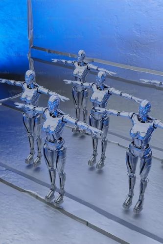
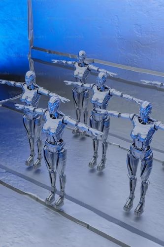

Welcome to our HTech Ideas website!
.jpg) 

Here at HTech Ideas, we explore innovative ideas and the future of transportation, with a specific focus on Baykea and InDrive - two leading online taxi platforms. Discover the latest advancements in technology and how they are revolutionizing the way we commute and experience transportation.
Tech Ideas
Stay updated on the latest tech trends, gadgets, and breakthroughs. From artificial intelligence and virtual reality to blockchain and renewable energy, we delve into the exciting world of technology and its impact on various industries.
Baykea
Baykea is a cutting-edge online bike/taxi platform that provides convenient and reliable transportation services. With a user-friendly app, Baykea offers seamless booking, secure payments, and a wide range of vehicle options to cater to diverse needs. Explore how Baykea is transforming the way we travel and enhancing the overall transportation experience.
InDrive
InDrive is a leading player in the online taxi industry, committed to providing efficient and sustainable transportation solutions. By leveraging advanced algorithms and smart routing, InDrive optimizes routes, reduces congestion, and minimizes travel time. Discover how InDrive is embracing technology to create a more eco-friendly and efficient transportation ecosystem.
Join us as we explore the intersection of technology and transportation, unraveling the possibilities and potential for a connected, smart, and sustainable future. Stay informed, inspired, and empowered to navigate the rapidly evolving tech landscape and embrace the transformative power of Baykea and InDrive.